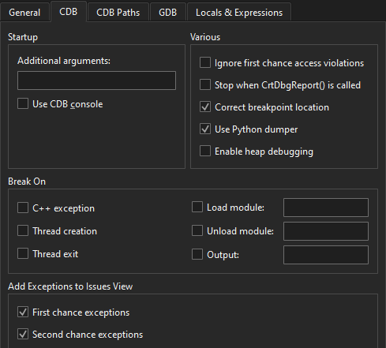

CDB
To set preferences for managing the CDB process, go to Preferences > Debugger > CDB.

The following table summarizes the preferences.
| Preference | Value |
|---|---|
| Additional arguments | Additional arguments for starting CDB. |
| Use CDB console | If a console application does not start up properly in the configured console and the subsequent attach fails, diagnose the issue by using the native CDB console. Select this checkbox to override the console set in the Windows system environment variables. Note that the native console does not prompt on application exit. |
| Ignore first chance access violations | Disables first-chance break on access violation exceptions. The second occurrence of an access violation will break into the debugger. |
| Stop when CrtDbgReport() is called | Automatically adds a breakpoint on the CrtDbgReport() function to catch runtime error messages caused by assert(), for example. |
| Correct breakpoint location | CDB enables setting breakpoints in comments or on source lines for which no code was generated. In such situations, the breakpoint is shifted to the next source code line for which the code was actually generated. To reflect such temporary changes by moving the breakpoint markers in the source code editor, select this checkbox. For more information, see Setting breakpoints. |
| Use Python dumper | Uses the abstraction layer of Python Dumper classes to create a description of data items in the Locals and Expressions views. For more information, see Debugging Helper Implementation. |
| Enable heap debugging | Allocates memory using the debug heap rather than the normal heap. The debug heap has checks that help diagnose heap related bugs, but negatively impacts performance when allocating memory in the debugged process. |
| Break On | Whether the debugger should break on C++ exceptions, on thread creation or exit, on loading or unloading the specified application modules, or on the specified output. |
| Add Exceptions to Issues View | Shows information about first-chance and second-chance exceptions in Issues. |
See also How To: Debug, Debugging, Debuggers, and Debugger.